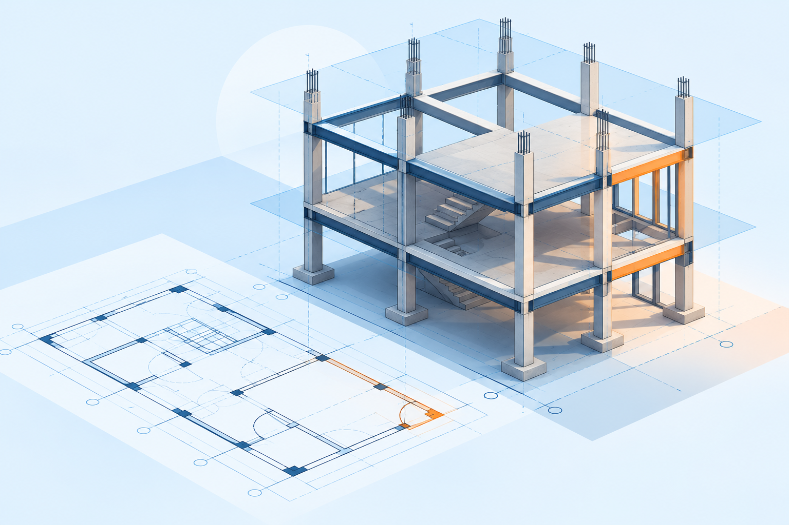
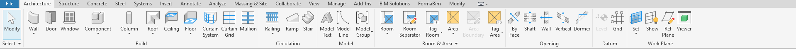

เริ่มจากศูนย์
สู่โมเดล Revit แรกของคุณ
8 บทเรียนภาษาไทย ฝึกกับอาคารตัวอย่างเดียวกัน ตั้งแต่เปิดโครงการจนได้แผ่นแบบ PDF โดยไม่ต้องเดาว่าควรเรียนอะไรต่อ
เริ่มบทที่ 1 →อ่านบทเรียนได้ทันที • วิดีโอจะเพิ่มภายหลัง • ไม่ต้องสมัครเพื่ออ่าน

เตรียมพร้อม แล้วเรียนทีละบท
เหมาะสำหรับผู้ที่ใช้คอมพิวเตอร์ได้ แต่ยังไม่เคยสร้างโมเดล Revit เตรียม Revit ที่ใช้งานได้อย่างถูกต้องตามสิทธิ์ และโฟลเดอร์เก็บงานของคุณ ไม่จำเป็นต้องมีไฟล์แบบเดิม
ใช้ Architectural Template แบบ Metric ถ้ามี ชื่อเมนูและ Family อาจต่างตามรุ่น ภาษา และชุด Content ของเครื่อง หากตำแหน่งคำสั่งต่าง ให้ค้นชื่อคำสั่งใน Help ของรุ่นที่ใช้อยู่
วิธีเรียน: อ่านเป้าหมาย → ทำตามขั้นตอน → ตรวจเช็กลิสต์ → บันทึกไฟล์แยกตอนจบบท หากมีวิดีโอแล้ว ให้หยุดคลิปเป็นช่วง ๆ เพื่อลองทำด้วยตนเอง
โจทย์เดียวตลอดชุด
อาคารฝึกชั้นเดียว ขนาดตามแนวกริด 6 × 8 เมตร
- หน่วยความยาว: มิลลิเมตร
- Level: L1 = 0, Roof = 3,000 มม.
- Grid: A–B ห่าง 6,000 มม.; 1–2 ห่าง 8,000 มม.
- ผนังรอบอาคาร ประตู 1 บาน หน้าต่าง 2 บาน พื้น และหลังคาฝึก
- ผลงานปลายทาง: แปลน รูปตัด ภาพ 3D และแผ่นแบบ PDF
ขนาดและชนิดวัสดุใช้เพื่อฝึกโปรแกรมเท่านั้น ไม่ใช่แบบก่อสร้างหรือคำแนะนำออกแบบโครงสร้าง
เลือกบท หรือเรียนตามลำดับ
ทำเครื่องหมายบทที่เรียนจบได้ด้านล่าง
ความคืบหน้าเก็บเฉพาะเบราว์เซอร์นี้ ไม่ส่งเข้าบัญชีหรือซิงก์กับเครื่องอื่น
รู้จักหน้าจอ และควบคุมมุมมอง
เป้าหมาย: ค้นคำสั่ง เลือกองค์ประกอบ และเปิด View ได้โดยไม่หลงหน้าจอ
ยังไม่มีวิดีโอ — อ่านและฝึกตามขั้นตอนด้านล่างได้ทันที

ลงมือทำ
- เปิด Revit แล้วเปิด Project ตัวอย่าง หรือสร้างโครงการทดสอบจาก Template ที่มีในเครื่อง
- หา Ribbon ด้านบน, Properties และ Project Browser หากแผงหาย เปิดที่ View → User Interface
- ดับเบิลคลิกแปลนใน Project Browser แล้วเปิดรูปด้านและ Default 3D View สังเกตว่าทุก View อยู่ในโครงการเดียวกัน
- หมุนลูกล้อเพื่อ Zoom และกดลูกล้อค้างเพื่อ Pan ใน 3D ใช้ ViewCube ช่วยเปลี่ยนทิศทาง
- คลิกเลือกองค์ประกอบที่มีอยู่ ดูข้อมูลใน Properties แล้วกด Esc เพื่อยกเลิกคำสั่งหรือการเลือก
อ่านเพิ่มเติม: คู่มือแถบเครื่องมือพร้อมภาพครบทุกแท็บ
ตรวจผลก่อนผ่านบท
- เปิดแปลนและ 3D สลับกันได้
- หา Properties กับ Project Browser เจอ
- อธิบายได้ว่า View ไม่ใช่ไฟล์โมเดลคนละชุด
ถ้าหน้าจอไม่เหมือนตัวอย่าง
Template และรุ่น Revit ทำให้รายการ View ต่างกันได้ ไม่ต้องสร้างให้เหมือนภาพทุกอย่าง ให้ตรวจว่ามีแปลน รูปด้าน และ 3D ที่ใช้งานได้
สร้าง Project และตั้งค่า Units
เป้าหมาย: เริ่มโครงการใหม่และอ่านค่าระยะได้ตรงหน่วย
ยังไม่มีวิดีโอ — อ่านและฝึกตามขั้นตอนด้านล่างได้ทันที
ลงมือทำ
- เลือก File → New → Project เลือก Architectural Template แบบ Metric และสร้างเป็น Project ไม่ใช่ Project Template
- ใช้ Save As บันทึกเป็น
Revit-Practice-02.rvtในโฟลเดอร์แบบฝึก - เปิด Manage → Project Units เลือกหมวด Common แล้วตั้ง Length เป็น Millimeters พร้อมรูปแบบการปัดเศษที่อ่านง่าย
- เปิดแปลน ทดสอบวาด Model Line ยาว 6,000 มม. โดยป้อนค่า 6000 แล้วตรวจระยะด้วยเครื่องมือวัด
- ลบเส้นทดสอบและบันทึก ตรวจว่าไม่มีองค์ประกอบทดลองค้างอยู่
ตรวจผลก่อนผ่านบท
- มีไฟล์ .rvt และเปิดกลับได้
- ค่าระยะ 6000 แสดงเป็น 6,000 มม. ตามรูปแบบที่ตั้ง
- รู้ว่า Project Units เปลี่ยนรูปแบบหน่วย ไม่ใช่สั่งย่อหรือขยายโมเดล
ไม่มี Architectural Template ให้เลือก?
ตรวจตำแหน่ง Template และการติดตั้ง Content ตามรุ่น Revit อย่าสุ่มใช้ไฟล์ที่ไม่ทราบหน่วย หากใช้ Template อื่น ให้ตรวจ View, Units และ Family ที่จำเป็นก่อนเริ่มบทต่อไป
กำหนด Level และ Grid
เป้าหมาย: กำหนดระดับแนวดิ่งและตำแหน่งอาคารในแปลนให้ตรวจสอบได้
ยังไม่มีวิดีโอ — อ่านและฝึกตามขั้นตอนด้านล่างได้ทันที
ลงมือทำ
- เปิดไฟล์บทที่ 2 แล้ว Save As เป็น
Revit-Practice-03.rvt - เปิดรูปด้าน (Elevation) หา Level ที่มีอยู่ก่อน อย่าสร้างระดับซ้อน ปรับหรือเพิ่มด้วย Level ให้ได้ L1 = 0 และ Roof = 3000 มม.
- ถ้าเปลี่ยนชื่อ Level แล้วโปรแกรมถามเรื่องชื่อ View ให้อ่านก่อนยืนยัน หากไม่มีแปลน L1 สร้างผ่าน View → Plan Views → Floor Plan
- เปิดแปลน L1 ใช้ Grid วางแนวตั้ง A และ B ระยะห่าง 6000 มม. วางแนวนอน 1 และ 2 ระยะห่าง 8000 มม.
- ใช้ Aligned Dimension ตรวจระยะระหว่างกริด และเปิดรูปด้านตรวจระดับอีกครั้งก่อนบันทึก
จำง่าย: Level บอกความสูง; Grid บอกแนวอ้างอิงในแปลน ไม่ใช่ผนังหรือเสา
ตรวจผลก่อนผ่านบท
- มี L1 ที่ 0 และ Roof ที่ 3000 มม.
- แปลน L1 เปิดได้จาก Project Browser
- กริด A–B = 6000 และ 1–2 = 8000 มม.
สร้าง Level แล้วไม่มี Floor Plan?
การมี Level ไม่ได้แปลว่ามีแปลนเสมอไป ตรวจตัวเลือก Make Plan View ตอนสร้าง หรือสร้างแปลนจาก View → Plan Views → Floor Plan เลือกระดับที่ยังไม่มีแปลน
สร้างผนัง และเข้าใจ Constraints
เป้าหมาย: สร้างผนังที่ผูกกับระดับ ไม่ใช่แค่วาดเส้นรอบอาคาร
ยังไม่มีวิดีโอ — อ่านและฝึกตามขั้นตอนด้านล่างได้ทันที
ลงมือทำ
- Save As เป็น
Revit-Practice-04.rvtเปิดแปลน L1 และเลือก Architecture → Wall - เลือก Basic Wall ที่มีในเครื่อง สำหรับฝึกอาจ Duplicate Type เป็น Practice Wall แล้วกำหนดความหนา 200 มม. อย่าแก้ Type เดิมโดยไม่รู้ว่าใช้อยู่ที่ใดบ้าง
- ตั้ง Base Constraint = L1, Base Offset = 0, Top Constraint = Roof และ Top Offset = 0
- ตั้ง Location Line = Wall Centerline วาดผนัง 4 ด้านตามกริด A–B และ 1–2 จบคำสั่งด้วย Esc
- เปิด 3D และรูปด้าน ตรวจความสูงและรอยต่อ จากนั้นลองเปลี่ยน Roof เป็น 3200 มม. สังเกตผนัง ก่อนคืนค่า 3000 และบันทึก
ตรวจผลก่อนผ่านบท
- มีผนัง 4 ด้าน ไม่ซ้อนกัน
- ผนังสูงถึง Roof และปรับตาม Level ได้
- เข้าใจว่าขนาด 6 × 8 เมตรเป็นตามกริด/แนวกลางผนัง ไม่ใช่ระยะภายในสุทธิ
ผนังไม่สูงตาม Roof?
เลือกผนังตรวจ Top Constraint ถ้าเป็น Unconnected จะใช้ Unconnected Height แทน ตรวจ Offset และสถานะการ Attach ด้วย ใช้รูปด้านช่วยตรวจ อย่าดูเฉพาะแปลน
วางประตู หน้าต่าง และเลือก Family
เป้าหมาย: เข้าใจ Host, Type และคุณสมบัติเฉพาะชิ้น
ยังไม่มีวิดีโอ — อ่านและฝึกตามขั้นตอนด้านล่างได้ทันที
ลงมือทำ
- Save As เป็น
Revit-Practice-05.rvtเปิดแปลน L1 - เลือก Architecture → Door เลือกชนิดที่มีอยู่ หรือ Load Family จาก Content ที่เชื่อถือได้ ให้ใช้ประตูแบบติดผนังสำหรับแบบฝึกนี้
- วางประตู 1 บานบนผนังด้านกริด 1 เลือกขนาดประมาณ 900 × 2100 มม. หากไม่มีขนาดนี้ใช้ Type ใกล้เคียงและจดขนาดจริง
- เลือก Architecture → Window วางหน้าต่าง 2 บานในผนังด้านอื่น กำหนด Sill Height ประมาณ 900 มม. ตรวจขนาดให้หัวหน้าต่างไม่เกิน Roof
- เลือกแต่ละชิ้น ตรวจ Level, Type และทิศทางเปิดด้วยลูกศร Flip ที่องค์ประกอบ เปิด 3D ตรวจช่องเปิดและบันทึก
ตรวจผลก่อนผ่านบท
- ประตู 1 บาน หน้าต่าง 2 บาน อยู่บนผนัง
- ทิศเปิดประตูและระดับหน้าต่างถูกต้อง
- รู้ว่าแก้ Type อาจเปลี่ยนทุกชิ้นที่ใช้ Type เดียวกัน
วางประตูไม่ได้ หรือไม่เห็นในแปลน?
ตรวจว่า Family ต้องการ Host แบบใด และกำลังวางบนผนังจริง หากวางแล้วไม่เห็น ให้ตรวจใน 3D ก่อน จากนั้นตรวจ Level, View Range และ Visibility/Graphics ของแปลน ไม่ควรวางซ้ำทันที
สร้างพื้น และหลังคาฝึก
เป้าหมาย: สร้างองค์ประกอบจากขอบเขตปิดและตรวจตำแหน่งในรูปตัด
ยังไม่มีวิดีโอ — อ่านและฝึกตามขั้นตอนด้านล่างได้ทันที
ลงมือทำ
- Save As เป็น
Revit-Practice-06.rvtเปิด L1 แล้วเลือก Architecture → Floor - เลือก Type พื้นที่มี กำหนด Level = L1 และ Height Offset = 0 วาดขอบเขตสี่เหลี่ยมตามกริด 6 × 8 เมตร
- ตรวจเส้น Sketch ให้ต่อครบ ไม่มีช่องว่างหรือเส้นซ้อน แล้วกด Finish ตรวจตำแหน่งพื้นใน 3D
- เปิดแปลน Roof (สร้างแปลนหากยังไม่มี) เลือก Roof by Footprint ตั้ง Base Level = Roof วาดขอบเขตเดียวกับแบบฝึก
- ปิด Defines Slope ทุกขอบเพื่อฝึกหลังคาแนวราบ แล้ว Finish หากมีคำถาม Attach Walls ให้ยังไม่ Attach ในแบบฝึกนี้
- เปิดรูปตัดในบทถัดไปเพื่อตรวจความหนาและการชนกับผนัง บันทึกงาน
แบบฝึกนี้ตั้งใจให้ขอบเขตเรียบง่าย หลังคาฝึกแนวราบไม่ใช่รายละเอียดหลังคาจริงที่ออกแบบการระบายน้ำแล้ว
ตรวจผลก่อนผ่านบท
- สร้าง Floor และ Roof สำเร็จ ไม่ค้างใน Sketch Mode
- พื้นอ้างอิง L1 หลังคาอ้างอิง Roof
- เห็นองค์ประกอบครบใน 3D และรู้ว่าความหนาต้องตรวจในรูปตัด
กด Finish แล้วเกิดข้อผิดพลาด?
ตรวจ Sketch: ปลายเส้นต้องต่อกัน ขอบเขตต้องปิด และไม่มีเส้นทับซ้อน ใช้ Zoom ตรวจมุมทีละจุด หากยังไม่พร้อมให้ Cancel แล้วเริ่มใหม่ ไม่ต้องฝืนยืนยันข้อความเตือน
จัด View สร้างรูปตัด และใส่มิติ
เป้าหมาย: ตรวจโมเดลหลายมุมมอง และสื่อสารขนาดอย่างชัดเจน
ยังไม่มีวิดีโอ — อ่านและฝึกตามขั้นตอนด้านล่างได้ทันที
ลงมือทำ
- Save As เป็น
Revit-Practice-07.rvtตั้งชื่อแปลนเป็น L1 - Practice Plan และตั้ง View Scale เป็น 1:100 - ใช้ View → Section ลากแนวรูปตัดผ่านอาคาร เปิดรูปตัดจากสัญลักษณ์หรือ Project Browser
- ตรวจระดับพื้น หัวผนัง และหลังคา หากซ้อนกัน ให้เลือกตรวจ Type Thickness และ Offset ก่อนแก้ พร้อมบันทึกเหตุผล
- ในแปลน ใช้ Annotate → Aligned Dimension ใส่ระยะกริด 6000 และ 8000 มม. ตรวจว่าเลือกอ้างอิงกริดจริง ไม่ใช่ผิวผนัง
- เพิ่ม Text ชื่อแบบฝึก แล้วปรับ Crop Region ให้แสดงอาคารและมิติครบ เปิด 3D แล้วตั้งชื่อ 3D - Practice
- ลองเปลี่ยน View Scale เป็น 1:50 สังเกตข้อความและพื้นที่บนแบบ จากนั้นคืนแปลนเป็น 1:100 และบันทึก
ตรวจผลก่อนผ่านบท
- มีแปลน รูปตัด และ 3D ที่ตั้งชื่อแล้ว
- มิติแปลนอ่านได้และไม่ถูก Crop ตัด
- แยกได้ระหว่างแก้โมเดล กับปรับการแสดงผลของ View
องค์ประกอบหายจาก View?
ตรวจว่าอยู่ใน View และระดับที่ถูกต้อง ดู Crop, View Range, Visibility/Graphics และ Temporary Hide/Isolate ก่อน อย่าลบหรือสร้างชิ้นใหม่เพียงเพราะมองไม่เห็นในแปลนเดียว
จัด Sheet และส่งออก PDF
เป้าหมาย: รวมมุมมองเป็นแผ่นแบบ และตรวจไฟล์ปลายทางด้วยตัวเอง
ยังไม่มีวิดีโอ — อ่านและฝึกตามขั้นตอนด้านล่างได้ทันที
ลงมือทำ
- Save As เป็น
Revit-Practice-08.rvtเลือก View → Sheet ใช้ Title Block ที่มีในเครื่อง หรือ Load Family แบบ Title Block - กำหนด Sheet Number = A101 และ Sheet Name = Revit Beginner Practice
- ลากแปลน รูปตัด และ 3D จาก Project Browser ลง Sheet จัดตำแหน่งไม่ให้ชนกรอบหรือชื่อ View หากพื้นที่ไม่พอใช้แผ่นเพิ่ม
- ตรวจ View Scale ของแปลนและรูปตัดใน Properties ของแต่ละ View ไม่ใช้การ Zoom บนจอแทนการตั้งสเกล
- ใช้ File → Export → PDF ในรุ่นที่รองรับ เลือก Sheet ที่ต้องการและขนาดกระดาษให้ตรง ถ้ารุ่นไม่มี PDF Export ใช้ Print กับ PDF Printer ที่มีในเครื่อง
- เปิด PDF ที่ส่งออกจริง ตรวจครบทุกหน้า ตัวอักษร ระยะ และขอบกระดาษ แล้วเก็บ PDF พร้อมไฟล์ .rvt
ตรวจผลก่อนผ่านบท
- ได้ Sheet A101 พร้อมชื่อและมุมมองครบ
- PDF เปิดได้ ไม่มีส่วนสำคัญถูกตัด
- บันทึกไฟล์ .rvt และ PDF อยู่ในโฟลเดอร์ที่หาเจอ
PDF ไม่ตรงกับที่เห็นใน Sheet?
ตรวจว่าเลือก Sheet ไม่ใช่ Current View ตรวจขนาดกระดาษ Orientation และการย่อขยาย หากต้องการสเกลจริง อย่าใช้ Fit to Page โดยไม่ตรวจผล และตรวจตัวเลือกการพิมพ์ของ PDF Viewer ด้วย
ทดสอบความเข้าใจ โดยไม่เปิดขั้นตอน
สร้างไฟล์ใหม่ กำหนดกริด 5 × 7 เมตร และ Roof ที่ 2800 มม. แล้วสร้างผนัง ประตู พื้น หลังคา พร้อม Sheet ใหม่ ถ้าทำได้และอธิบาย Constraints ได้ แสดงว่าเข้าใจวิธีทำ ไม่ใช่เพียงจำตำแหน่งคลิก
เช็กลิสต์ตรวจผลงานปลายทาง
- Units, Level และ Grid ตรงโจทย์ใหม่
- ผนังผูกกับ Level และตรวจในรูปตัดแล้ว
- ประตู/หน้าต่างมี Host และระดับถูกต้อง
- View มีชื่อ มิติอ่านได้ Sheet ไม่รก
- PDF เปิดตรวจจริง และเก็บไฟล์ต้นฉบับแล้ว
เรียนต่อ: เช็กลิสต์ประสานโมเดลก่อนส่งแบบ
แหล่งอ้างอิงและคำแนะนำ
เนื้อหานี้เรียบเรียงเป็นแบบฝึกโดย BiMSolutions อ้างอิงหลักการจาก Autodesk: Tools and functions และ Revit Help: Model Layout ให้ตรวจรายละเอียดคำสั่งกับ Help ของรุ่นที่ใช้งาน
วิดีโอและไฟล์ตัวอย่างดาวน์โหลดจะเพิ่มเมื่อพร้อม ขณะนี้ไม่มีวิดีโอหรือไฟล์ .rvt เฉลยแนบในชุดนี้